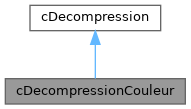
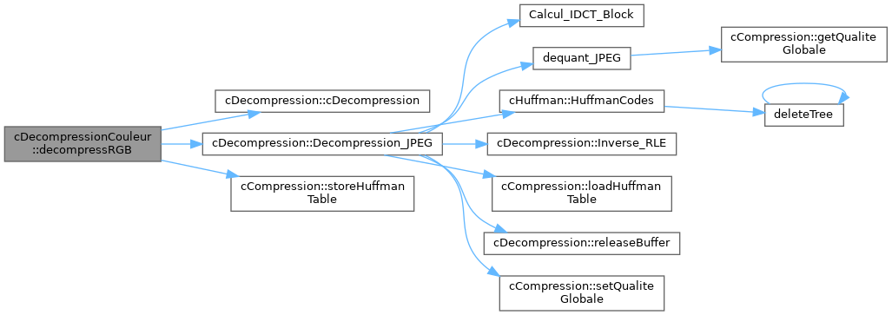

Loading...
Searching...
No Matches
cDecompressionCouleur Class Reference
JPEG-like decompression front-end for color assets. More...
#include <cDecompressionCouleur.h>
Inheritance diagram for cDecompressionCouleur:

Collaboration diagram for cDecompressionCouleur:

Public Member Functions | |
| cDecompressionCouleur (unsigned int qualite=50) | |
| Construct a color decompressor with an optional quality factor. | |
| bool | decompressRGB (const std::string &inputPrefix, std::vector< unsigned char > &rgb, unsigned int &width, unsigned int &height, jpeg::ChromaSubsampling &modeOut) const |
| Reconstruct an RGB buffer from color codec artifacts. | |
| Public Member Functions inherited from cDecompression | |
| cDecompression () | |
| Construct an empty decompressor. | |
| cDecompression (unsigned int largeur, unsigned int hauteur, unsigned int qualite=50, unsigned char **buffer=nullptr) | |
| Construct a decompressor targeting specific dimensions. | |
| ~cDecompression () | |
| Destroy the instance and release owned memory. | |
| void | setLargeur (unsigned int largeur) |
| Set the output image width. | |
| void | setHauteur (unsigned int hauteur) |
| Set the output image height. | |
| void | setQualite (unsigned int qualite) |
| Set the quality factor used during inverse quantization. | |
| void | setBuffer (unsigned char **buffer) |
| Attach a row buffer managed by the caller. | |
| unsigned int | getLargeur () const |
| Return the current output width. | |
| unsigned int | getHauteur () const |
| Return the current output height. | |
| unsigned int | getQualite () const |
| Return the quality factor. | |
| unsigned char ** | getBuffer () const |
| Return the bound row buffer (may be nullptr). | |
| unsigned char ** | Decompression_JPEG (const char *Nom_Fichier_compresse) |
| Perform the full JPEG-like decompression pipeline. | |
Detailed Description
JPEG-like decompression front-end for color assets.
The class reads the metadata produced by cCompressionCouleur, restores each channel to the spatial domain, performs chroma upsampling, and converts the YCbCr planes back to interleaved RGB pixels.
Constructor & Destructor Documentation
◆ cDecompressionCouleur()
|
explicit |
Construct a color decompressor with an optional quality factor.
Construct a color decompressor with a desired quality factor.
- Parameters
-
qualite Quality value used during dequantization.
Here is the call graph for this function:
Member Function Documentation
◆ decompressRGB()
| bool cDecompressionCouleur::decompressRGB | ( | const std::string & | inputPrefix, |
| std::vector< unsigned char > & | rgb, | ||
| unsigned int & | width, | ||
| unsigned int & | height, | ||
| jpeg::ChromaSubsampling & | modeOut ) const |
Reconstruct an RGB buffer from color codec artifacts.
Rebuild an RGB image from color compression artifacts.
- Parameters
-
inputPrefix Prefix identifying the metadata and per-channel files. rgb Output vector receiving interleaved RGB pixels. width Output image width in pixels. height Output image height in pixels. modeOut Receives the subsampling mode stored in the metadata.
- Returns
- true on success, false when any reconstruction step fails.
- Parameters
-
inputPrefix Prefix of the color metadata and channel files. rgb Output RGB buffer. width Output width in pixels. height Output height in pixels. modeOut Receives the stored subsampling mode.
- Returns
- true on success, false on any error.
Here is the call graph for this function:

The documentation for this class was generated from the following files:
- include/core/cDecompressionCouleur.h
- src/core/cDecompressionCouleur.cpp